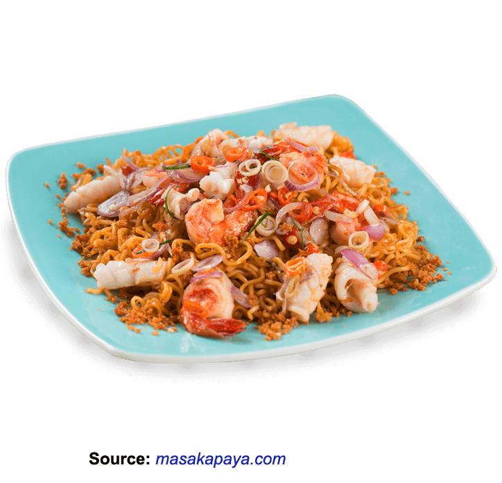

Indomie Seafood with Sambal Matah

Mie goreng / mee goreng is popular food from the street all the way to restaurants. It’s popular in Indonesia, Malaysia, and Singapore. Im sharing the Indonesian version of Mie Goreng Seafood With Sambal Matah from Bali.
Ingredients:
- Ingredients:
- 2 packs of Indomie Mi Goreng
- 20 ml Cooking Oil
- 200 gr Shrimp (peeled)
- 150 gr Squid (cut into 3 cm per piece)
- 5 cloves Shallots (sliced)
- 2 Cloves Garlic (sliced)
- 15 Cayenne Pepper (sliced)
- 4 pieces of Orange Leaves (sliced)
- 1 tsp Fish Paste
- 2 Limes
- 1/2 tsp Salt
How to cook:
- Put Indomie Mi Goreng in boiling water for 3 minutes. Lift, drain, set aside.
- the cooking oil, fry the shrimp and squid until they are cooked. Lift. Drain.
- Mix the cooked noodles, Sambal Matah mixture, fried shrimp, and fried squid into a plate.
- Ready to Serve.
- Sambal Matah Mixture: 1. Mix all ingredients: 5 cloves shallots, 2 cloves garlic, 15 cayenne pepper, 4 pieces of orange leaves, fish paste, limes, and salt. Put into a hot cooking oil used to fry the shrimp, stir well. Set aside.